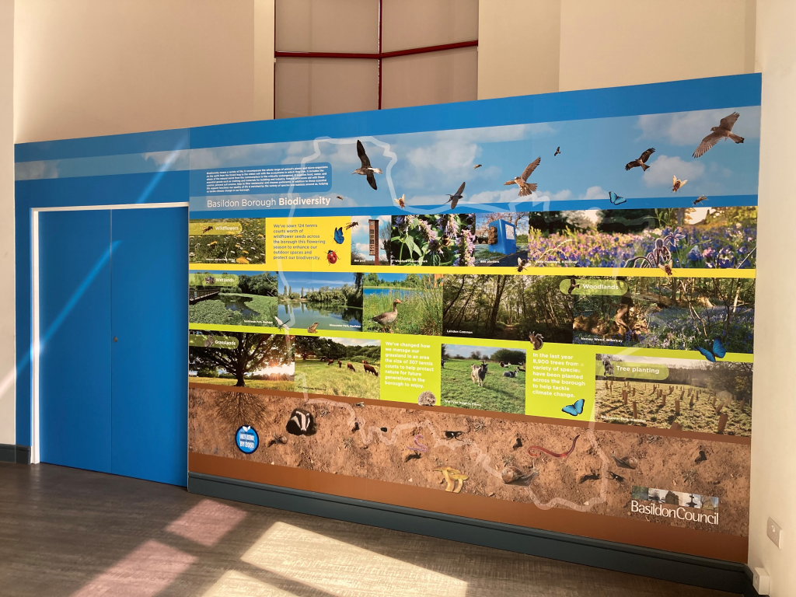
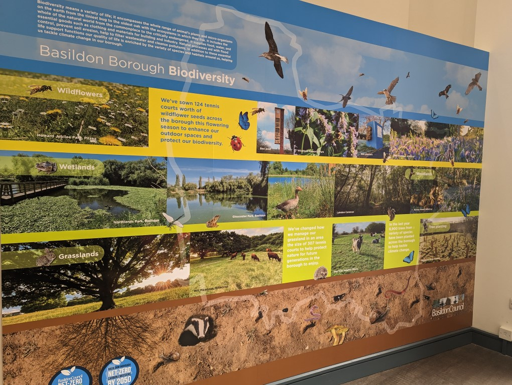
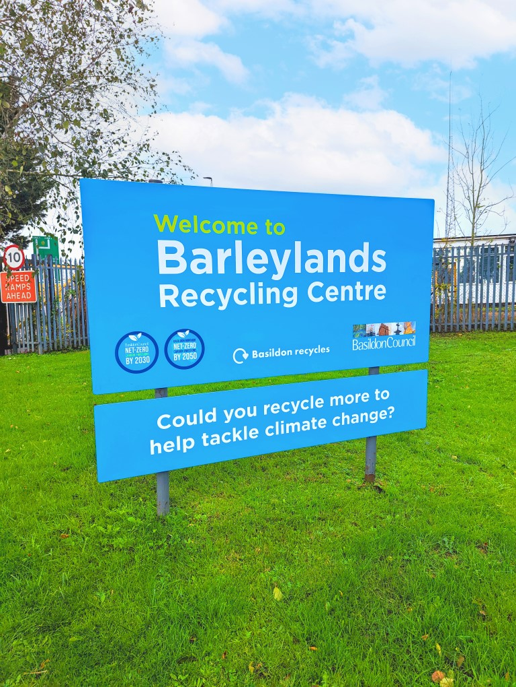
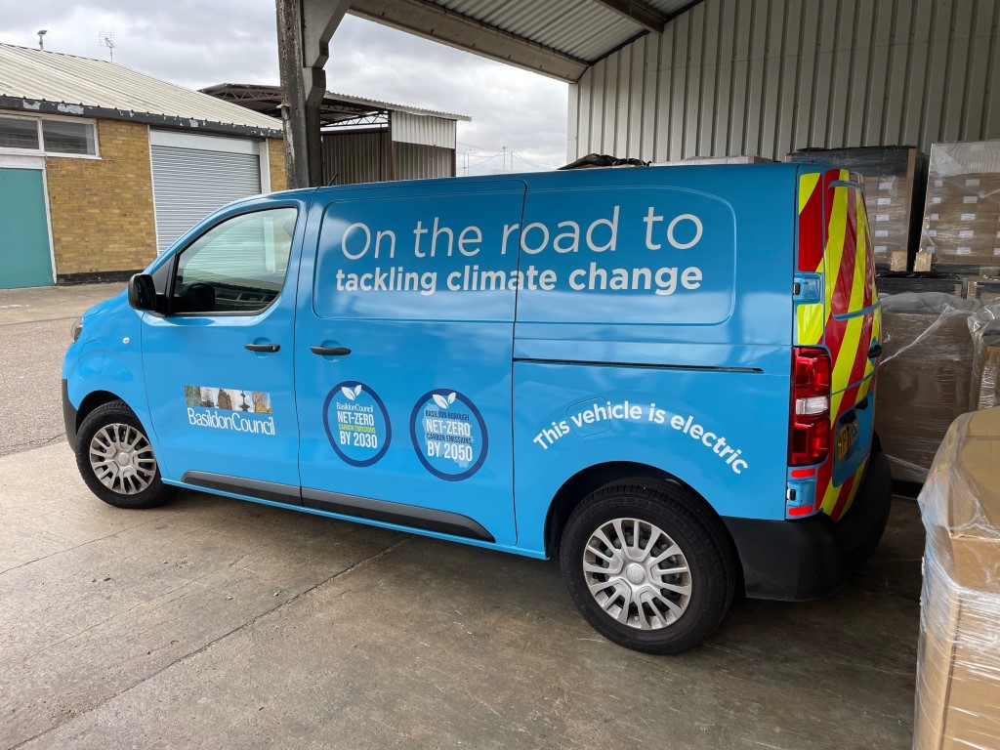
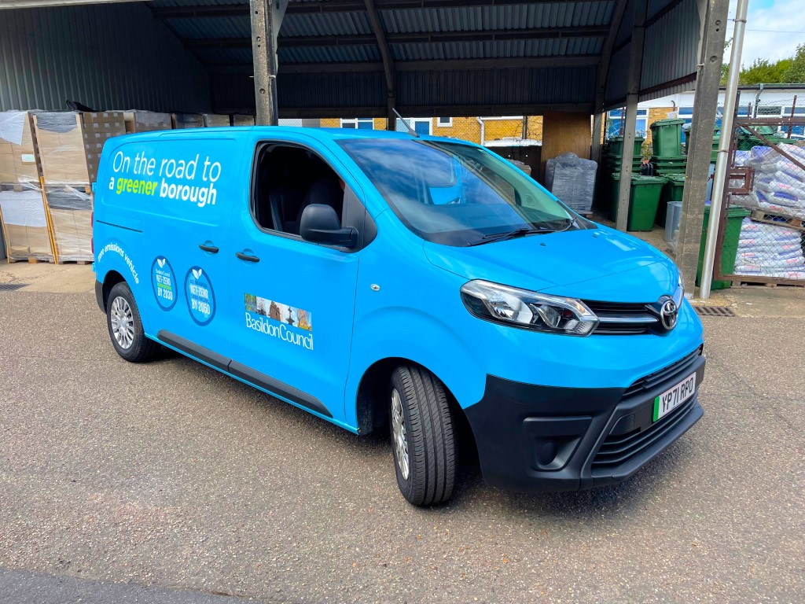
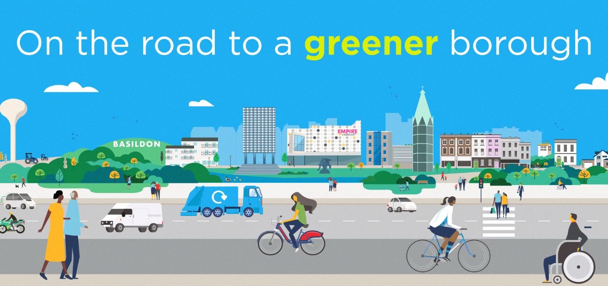

Biodiversity and environmental design
Environmental graphics · Illustration · Vehicle wrap design
This campaign utilizes visual storytelling to raise awareness for environmental conservation and local biodiversity. A central feature of the project was a large scale vinyl wall display designed for the council office reception. This installation serves to educate both staff and visitors about local species and habitats while highlighting ongoing protection efforts.
The campaign extended into the public realm through the design of high impact vehicle wraps for the borough's waste collection fleet. By combining educational illustration with large scale spatial design I helped transform everyday infrastructure into a mobile platform for environmental advocacy.







From the intricate details of local species illustrations to the technical requirements of vehicle wrap production this project demonstrates my ability to manage complex multi platform campaigns. The result is a cohesive visual narrative that brings environmental awareness to the forefront of the community.